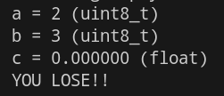
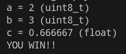

C Programming Lab
BME554L - Fall 2025 - Palmeri
Lab
Prelab
Objectives
- Introduction to C Programming
- Building Zephyr application
- Flashing Zephyr application
- Viewing serial output from Zephyr application running on your
nrf52833DK - Debugging Zephyr applications in VS Code
Zephyr Application Git Repository Overview
src/main.c- main application code.gitingore- ignore files that are not needed in the git repositoryCMakeLists.txt- build system configuration fileprj.conf- Zephyr configuration fileREADME.md- this fileCMakePresets.json- CMake presets file (build configuration).gitlab-ci.yml- GitLab CI configuration file
Things To Do
Git Best Practices
- Use best practices for version control (branching, commit messages, etc.).
- Do all development on a dedicated branch that is merged into
mainonce it is functional. - Commits should be very specific to the changes/additions you are making to your code. This will help you and others understand what you did and why you did it.
- On a given development branch, try to implement one small piece of functionality at a time, commit it, and then move on to the next piece of functionality.
Important
You do not want one, monolithic git commit right before you submit your project.
Fork / Clone / Build / Flash / View Serial Output
- Fork the C Programing lab repository on Duke’s GitLab server: https://gitlab.oit.duke.edu/kits/BME-554L-001-F25/c-programming-lab
- Add Dr. Palmeri (
mlp6) as a Maintainer in your forked repository. - Clone your forked repository to your local machine.
- Build the Zephyr application “as is” (review DevAcademy: Lesson 1).
- Flash the Zephyr application to your development kit.
- Connect the
VCOMport on thenrf52833DKto your computer (usingConnected Devicesand the plug icon) - Look at the serial output in the VS Code
Terminal
- Connect the
Modify the Zephyr Application (DataTypes / Typecasting / Formatted Printing)
- Inspect the code to see how variables
a,bandcare declared and initialized. - Flash the existing code and note the terminal output:

- On a development branch called
fix_division, without changing the declared datatypes ofa,b, orc, correct the code so thatcis output in the terminal:

- Push the
fix_divisionbranch to your GitLab repository. - Create a Merge Request to merge the
fix_divisionbranch into yourmainbranch. - Make sure the GitLab CI pipeline is successful before merging the
fix_divisionbranch intomain. If it isn’t passing, fix the problem locally on the same branch and push the changes to GitLab. - Pull your updated
mainbranch to your local machine. - Create an annotated tag for the merged commit on main with the fixed division named
v1.0.0. - Push this annotated tag to your GitLab repository.
Tip
Note that the CI pipelines running on the GitLab server can take a while to complete. Do not rely on them for immediate development feedback, but rather as a final check before merging code into main.
Library Refactor
- On another development branch on your local machine called
refactor_library, refactor the code to put thedivide_numbers()function into a library calledmy_math_functions.h. - Once you have your code working with this library, locally merge the
refactor_librarybranch intomain. - Create an annotated tag for the merged commit on main with the refactored library named
v1.1.0. - Push the new commit(s) and annotated tag to your GitLab repository. Remember, this will need to be done with two commands,
git pushandgit push --tags.
Push Everything to GitLab & Create an Issue to Notify Dr. Palmeri
- Make sure all of your commits are pushed to your
mainbranch, along with both annotated tags. - Confirm that the GitLab CI pipeline is successful.
- Create an Issue titled
C Programming Lab Completeand assign it to Dr. Palmeri (mlp6).
Gradescope
Complete the Gradescope assignment for this lab that is a few simple tasks:
- Confirm that you created the Issue above
- Confirm that you completed both of the Nordic DevAcademy lessons
- Upload a screenshot of your CI pipeline jobs passing
How to Ask for Help
- If you have a general / non-coding question, you should ask your TAs / Dr. Palmeri on Ed to allow any of them to respond in a timely manner.
- Push you code to your GitLab repository, ideally with your active development on a non-
mainbranch. - Create an Issue in your repository.
- Add as much detail as possible as to your problem, and add links to specific lines / section of code when possible.
- Assign the label “Bug” or “Question”, as appropriate.
- Be sure to specify what branch you are working on.
- Assign the Issue to one of the TAs.
- If your TA cannot solve your Issue, they can escalate the Issue to Dr. Palmeri.
- You will get a response to your Issue, and maybe a new branch of code will be pushed to help you with some example syntax that you can use
git diffto visualize.